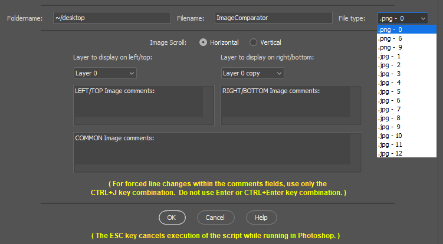
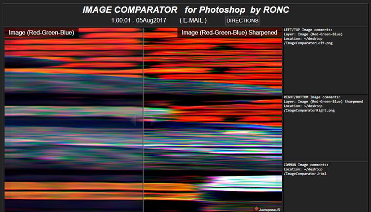

|
IMAGE COMPARATOR
for Photoshop by RONC ©2018
Version 2 08Jul2018 (E-MAIL)
|
|
|---|---|
| PHOTOSHOP SCRIPTS by RONC | |
|
IMAGE COMPARATOR - The user selects two layers (images) which are desired
to be compared. These images will then usually be written as PNG (24
bits/pixel) files or JPG files. A webpage is then provided to aid in
visually comparing the images within an Internet browser by scrolling one
image over the other. Typically all layers will be available but the script
will ignore those layers that the user turned off their visiblity in
Photoshop before the script execution. Input can be 8, 16, and 32 bit with
the output limited to 8 bit per color because of the Internet browser
limits. The PNG files are the best at preserving the images for Internet
use as there is no compression applied. Often larger files input are needed
so JPG files can be used but don't use for Pixel-Peeping.
|
|
| INPUT IMAGES | |
|
The input must be a multi-layered file containing the images for comparing
as layers.
Images for comparison must share the same dimensions and be ALIGNED. The image dimensions are best if like most print size and limited to the size of the device being used to view them. Smaller sizes (say 900x600) are best if one expects to scroll quickly and fits most laptop screens with much larger sizes (say 1500x1000) scroll slower. Files as large as 7500x5000 are viewable because scrollbars are available in the browser. Previous processing of the images should be parallel as possible and saved to files using non-compression formats like - psd/psb, tif or png24. |
|
| USAGE PARAMETERS | |
|  | |
| OUTPUT FOLDERNAME/FILENAME | |
|
FOLDERNAME - Location where to place images and web page. Desktop is
DEFAULT.
FILENAME - Base filename for images and web page. ImageComparator is the DEFAULT. ImageComparatorLeft.png, ImageComparatorRight.png, and ImageComparatorLeft.html. FILE Type - The file type can be either PNG (three compaction levels lossless) or JPG (12 levels of compression but lossy). Settings are: png - 0, 6, and 9 or jpg - 1, 2, 3, 4, 5, 6, 7, 8, 9, 10, 11, and 12. |
|
| IMAGE SCROLL (HORIZONTAL/VERTICAL) | |
|
HORIZONTAL - Left-right scrolling.
VERTICAL - Top-bottom scrolling. |
|
| INPUT IMAGES and USER COMMENTS | |
|
LAYERNAME LEFT - Select a layer from the dropdown list for left
image.
LAYERNAME RIGHT - Select a layer from the dropdown list for right image. COMMENTS LEFT - Comments to describe the left image's difference from the right one. COMMENTS RIGHT - Comments to describe the right image's difference from the left one. COMMENTS COMMON - Comments to describe those those the images share in common. To change lines within the comments fields, use only the CTRL+J key combination. Do not use Enter or CTRL+Enter key combination. The output should be displayed at 100% or larger on LCD screens. |
|
| OK/CANCEL/HELP | |
|
OK - Start script execution using parameters set in the above fields.
CANCEL - Cancel the use of the script before running and return to Photoshop. The ESC key cancels execution of the script while running in Photoshop. HELP - Open the PDF help file. |
|
| RECOMMENDED SCRIPT USAGE | |
| The output should be displayed at 100% or larger on LCD screens. | |
| EXECUTION OUTPUT | |
|  | |
| INSTALLATION/REMOVAL | |
| This script should work on Photoshop versions CS6
and CC onwards and for both Windows and MAC. Might also work with Photoshop Elements. Someone should try it. Please. The Script filename is IMAGE COMPARATOR.jsxbin and will be loaded to a folder with mostly *.jsx files. The Help filename is IMAGE_COMPARATOR-HELPv2.pdf and should be placed in the same folder as the Script file. |
|
| MAC OS X foldername: PSCC 2018: Users/[username]/Library/Preferences/Adobe Photoshop CC 2018 Settings PSCS6: Users/[username]/Library/Preferences/Adobe Photoshop CS6 Settings |
WINDOWS 10 foldername: PSCC 2018: C:\Program Files\Adobe\Adobe Photoshop CC 2018\Presets\Script |
| COPYRIGHT | |
|
RON CHAMBERS COPYRIGHT 2018
IMAGE COMPARATOR LICENSE AND COPYRIGHT Ron Chambers, rechmbrs@gmail.com February 2018 Release of IMAGE_COMPARATOR.jsxbin. The jsxbin routines are JavaScripts scripts for Adobe Photoshop. Compilation and rules for coding were set by Adobe ExtendedScript IDE. This program is free software; you can redistribute it and/or modify it under the terms of the GNU General Public License as published by the Free Software Foundation; either version 2 of the License, or (at your option) any later version. This program is distributed in the hope that it will be useful, but WITHOUT ANY WARRANTY; without even the implied warranty of MERCHANTABILITY or FITNESS FOR A PARTICULAR PURPOSE. See the GNU General Public License for more details. |
|